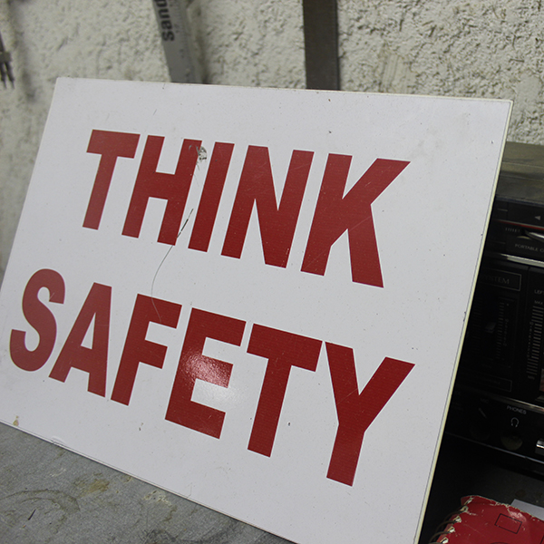
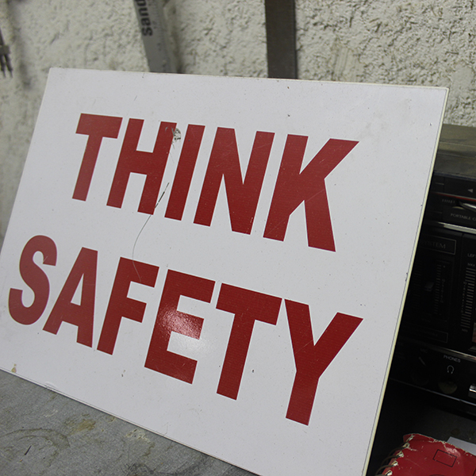

Save Home Heat Company is a full service heating, cooling and plumbing contractor serving Colorado customers since 1979. We believe in providing customers with enough information and guidance to make informed decisions in their own best interest. We do not engage in high pressure sales tactics. We take it as a very positive sign that most of our new business is generated from a satisfied customers' referral.
Save Home Heat Company was incorporated in November, 1979 in Boulder, Colorado. Our initial goal was to offer a full range of energy services, from state-of-the-art solar applications to insulation and energy audits. We were among the first contractors to work with high efficiency heating products when they originally entered the market.
Today we specialize in heating, cooling, and plumbing services. Although we no longer provide energy conservation or solar services, we find that our past experience in those areas provides a strong platform to make practical and cost effective recommendations.
Save Home Heat remains locally owned and operated. We employ an experience team of NATE certified technicians and installers, and licensed plumbers. You can rely on us to provide honest, professional service and be responsive to your needs.
Visit other locations on our site to learn more about the broad range of products and services we offer. Our service area has expanded beyond our Boulder base, so please contact us to see if we can assist you with your important home improvement needs.
Whether a furnace, boiler, air conditioner, evaporative cooler, water heater, or most any plumbing function, Save Home Heat is your best choice to provide replacement or repair services. Please visit our testimonial section to view the stream of positive feedback from our customers. Thank you for visiting our site!